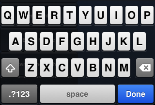

Mobile Keyboard
In most cases, Unity will handle keyboard input automatically for GUI elements but it is also easy to show the keyboard on demand from a script.
GUI Elements
The keyboard will appear automatically when a user taps on editable GUI elements. Currently, GUI.TextField, GUI.TextArea and GUI.PasswordField will display the keyboard; see the GUI class documentation for further details.
Manual Keyboard Handling
Use the TouchScreenKeyboard.Open() function to open the keyboard. Please see the TouchScreenKeyboard scripting reference for the parameters that this function takes.
Keyboard Layout Options
The Keyboard supports the following options:-
| Property: | Function: |
|---|---|
| TouchScreenKeyboardType.Default | Letters. Can be switched to keyboard with numbers and punctuation. |
| TouchScreenKeyboardType.ASCIICapable | Letters. Can be switched to keyboard with numbers and punctuation. |
| TouchScreenKeyboardType.NumbersAndPunctuation | Numbers and punctuation. Can be switched to keyboard with letters. |
| TouchScreenKeyboardType.URL | Letters with slash and .com buttons. Can be switched to keyboard with numbers and punctuation. |
| TouchScreenKeyboardType.NumberPad | Only numbers from 0 to 9. |
| TouchScreenKeyboardType.PhonePad | Keyboard used to enter phone numbers. |
| TouchScreenKeyboardType.NamePhonePad | Letters. Can be switched to phone keyboard. |
| TouchScreenKeyboardType.EmailAddress | Letters with @ sign. Can be switched to keyboard with numbers and punctuation. |
Text Preview
By default, an edit box will be created and placed on top of the keyboard after it appears. This works as preview of the text that user is typing, so the text is always visible for the user. However, you can disable text preview by setting TouchScreenKeyboard.hideInput to true. Note that this works only for certain keyboard types and input modes. For example, it will not work for phone keypads and multi-line text input. In such cases, the edit box will always appear. TouchScreenKeyboard.hideInput is a global variable and will affect all keyboards.
Visibility and Keyboard Size
There are three keyboard properties in TouchScreenKeyboard that determine keyboard visibility status and size on the screen.
| Property: | Function: |
|---|---|
| visible | Returns true if the keyboard is fully visible on the screen and can be used to enter characters. |
| area | Returns the position and dimensions of the keyboard. |
| active | Returns true if the keyboard is activated. This property is not static property. You must have a keyboard instance to use this property. |
Note that TouchScreenKeyboard.area will return a Rect with position and size set to 0 until the keyboard is fully visible on the screen. You should not query this value immediately after TouchScreenKeyboard.Open(). The sequence of keyboard events is as follows:
- TouchScreenKeyboard.Open() is called. TouchScreenKeyboard.active returns true. TouchScreenKeyboard.visible returns false. TouchScreenKeyboard.area returns (0, 0, 0, 0).
- Keyboard slides out into the screen. All properties remain the same.
- Keyboard stops sliding. TouchScreenKeyboard.active returns true. TouchScreenKeyboard.visible returns true. TouchScreenKeyboard.area returns real position and size of the keyboard.
Secure Text Input
It is possible to configure the keyboard to hide symbols when typing. This is useful when users are required to enter sensitive information (such as passwords). To manually open keyboard with secure text input enabled, use the following code:
TouchScreenKeyboard.Open("", TouchScreenKeyboardType.Default, false, false, true);

Alert keyboard
To display the keyboard with a black semi-transparent background instead of the classic opaque, call TouchScreenKeyboard.Open() as follows:
TouchScreenKeyboard.Open("", TouchScreenKeyboardType.Default, false, false, true, true);
